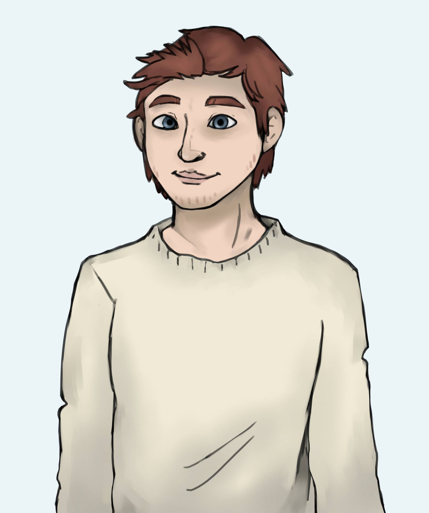
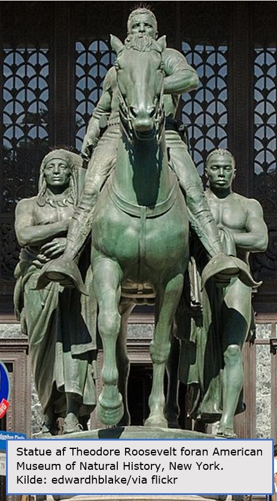

Jessica spejder efter Michael. Hun får øje på ham på den anden side af gaden, hvor han går i rask tempo hen imod statuen.
“Michael!” råber Jessica. Han stopper brat op og kigger rundt for at se, hvor råbet kommer fra.

“Hvor har du været? Du tager ikke telefonen,” siger Jessica og giver Michael et stort kram. “Jeg slukkede den. Jeg magtede sgu ikke, at mine forældre blev ved med at ringe,” siger Michael og gengælder krammet.
“Det forstår jeg godt. Jeg kender din hemmelighed nu,” siger Jessica smilende.
“Gør du? Det var aldrig min mening at skjule noget for dig. Det er bare svært,” siger Michael og tøver. “Jeg skammer mig over mine forældre, men de er jo mine forældre. Det er svært, når de forventer, at jeg skal være ligesom dem.”
Jessica giver Michaels arm et klem og nikker forstående. “Men det er på tide, at jeg står ved mine holdninger,” siger Michael så. “Jeg er træt af at skjule, hvem jeg er, bare for at glæde mine forældre.”
Michael stiller sig hen foran statuen.
“Den skal ned,” siger han bestemt. “Hvad mener du?” spørger Jessica og kigger forskrækket på ham. “Den symboliserer slaveriet og racisme, Jessica. Den kan ikke blive fjernet hurtigt nok,” siger Michael og finder værktøj frem fra sin rygsæk.
Hør Line Vinum Sørensen fortælle om problemet med statuerne og bliv klogere på, hvorfor Michael vil ødelægge en af dem.